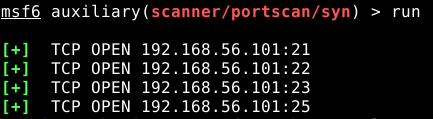

Hello,
I’m testing Metasploit Framework on Whonix Workstation to simulate attacks in a lab environment corresponding to a Virtual Machine in a private network (environment made by using simply VirtualBox).
In this lab environment I set one “victim” machine (Metasploitable 2) and two machines as attackers, one Debian 10.9 and the other one Whonix Workstation XFCE (connected to the Whonix Gateway).
The purpose of my test is simulating a complex scenario where different machines can communicate in a private network, where Debian and Whonix machines are also connected to Internet. The complex scenario is represented by an attack from these two machines to the Metasploitable machine where one attacker is using Whonix for anonymization.
After setting everything, I run the Metasploitable machine (let’s guess Private IP 192.168.58.99), and then, from the two attacker machines I execute the same command (that is a simple port scan). So:
msfconsole
use auxiliary/scanner/portscan/syn
setg RHOSTS 192.168.58.99
run
On Debian 10.9 machine, it works well. The output is like:

On Whonix Workstation, I get error messages as following:
{kind=link}
where we see the Google public DNS (8.8.8.8), so I guess that, despite I’m contacting a machine in the private network, these requests go to resolve DNS on Internet.
I think that this error could be due to Whonix contacts a Tor DNS server for DNS resolution. To solve should I change the content of /etc/resolv.conf in Whonix Workstation and/or Whonix Gateway or other items? How can I solve this issue in the “safest” way by lowering the impact on the anonymity?
I tried to change the content of /etc/resolv.conf of Whonix Workstation XFCE with “nameserver 8.8.8.8”, rebooted the machine but when I launch that command on metasploit, I get the same error.
About my doubts on anonymity if I allow the Workstation to contact 8.8.8.8, reading this post Another dns thatn 10.152.152.10 I think that the only information that I give to an external entity is:
1- They can understand that I’m not using a Tor DNS server for DNS resolution;
2- They can log the IP address of the Tor exit node.
I don’t know if could be other aspects.